What is treillis?#
treillis is a Python library built to help researchers and whoever is interested in microlattices. It provides tools to modelize 2D and 3D microlattices, to compute their elastic properties as well as calculate stresses, strains and elastic constants.
Its writing was initiated in SPEC lab, CEA Iramis, in the woodsy town of Gif-sur-Yvette, France. Its initial use was to model truss-metamaterials in a way that us experimental scientists would be able to use and analyze easily, and enabled us to generate what we call “DBAM” –Delaunay-based metamaterials, which are structurally isotropic.
treillis is built using mainly Numpy and Scipy, as well as Scikit-sparse for the mechanical calculations. Our goal is to have a package with a limited risk for conflicts between dependencies (which is already difficult enough with 3D visualization ), and an ease-of-use thanks to the scientific Python ecosystem.
Architecture of treillis#
treillis/
├── docs/
├── script_examples/
└── src/treillis/
├── _generation/
. ├── __init__.py
. ├── prepacking/
. . ├── Packing2D_nodes_0.0.csv
. . ...
. ├── 3D-packing-generation/
. ├── some_lattices/
. . ├── 28/
. . . ├── elems.csv
. . . ├── nodes.csv
. . . └── parameters.txt
. . ...
. ├── meshes.py
. ├── packings.py
. ├── lattices.py
. ├── io.py
. ├── redraw.py
. └── cutting.py
├── display/
. ├── __init__.py
. ├── plot_utilitaries.py
. ├── clean.py
. └── fast.py
└── mechanics/
├── __init__.py
├── utils.py
├── elements.py
├── stiffness.py
└── fracture.py
All the core functions for the lattice generation in the _generation module are called at the root of treillis, meaning it is not necessary to dive into the details of the generation functions if you only need to create the specific lattices that are already pre-defined. All other modules must be called.
Lattices for newbies#
A Lattice is at the simplest, represented by its nodes, which are the connecting dots, linked together by elements or elems. To represent each and every lattice, we use a node array of shape (Nnodes, Ndim) to represent the positions in space of the nodes, and an element array of shape (Nelems, 2), which contains the indices of both nodes connected by the given element. Almost everything else depends solely on those two tables and is defined for convenience and speed of use.
Implemented lattice types#
There are twelve base lattice types, and a composite, whose buildings are implemented in treillis.
Periodical lattices#
Lattice type |
Name in treillis |
Dimensionality |
Visualization |
|---|---|---|---|
Triangular |
|
2 |
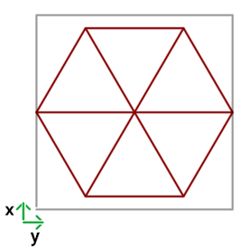 |
Square |
|
2 |
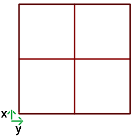 |
Hexagonal |
|
2 |
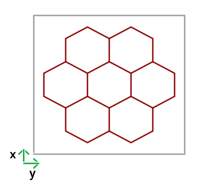 |
Quasi-2D Triangular |
|
3 |
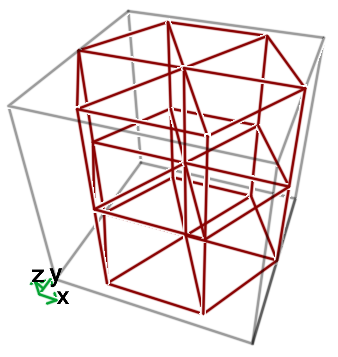 |
Quasi-2D Hexagonal |
|
3 |
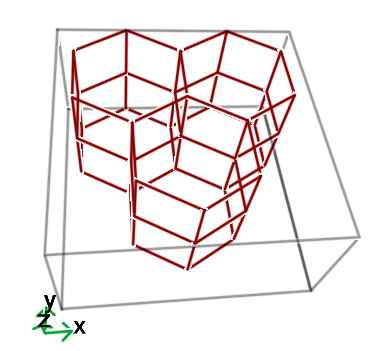 |
Cubic |
|
3 |
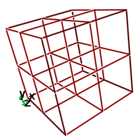 |
Rhombo-hexagonal dodecahedron |
|
3 |
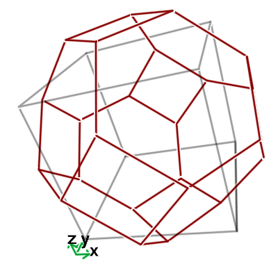 |
Rhombic dodecahedron |
|
3 |
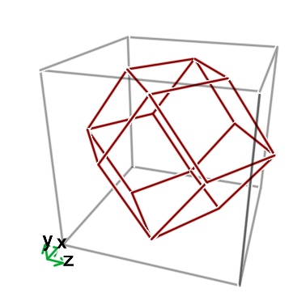 |
Octet-Truss |
|
3 |
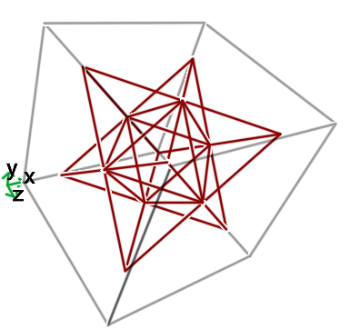 |
Isotropic lattices#
On top of classic periodical “crystal-like” lattices, treillis can generate two types of geometrically isotropic lattices from random close packings: Delaunay-based (with a triangular structure), and Voronoi-based (with an open foam-like structure) lattices, in 2D and 3D.
Lattice type |
Name in treillis |
Dimensionality |
Visualization |
|---|---|---|---|
Delaunay |
|
2 |
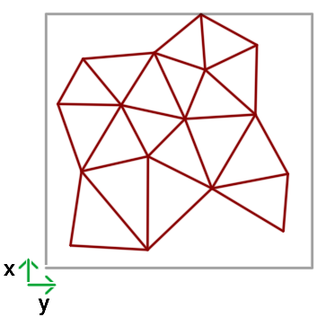 |
Delaunay |
|
3 |
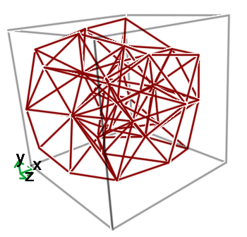 |
Voronoi |
|
2 |
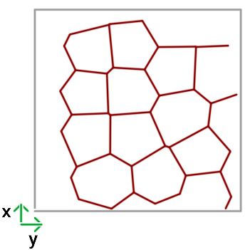 |
Voronoi |
|
3 |
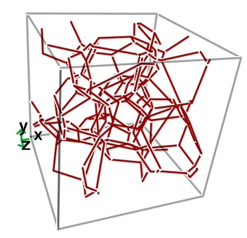 |
How are lattices generated?#
Periodic lattices are generated by filling a domain by the elementary cell of their mesh, using translations and rotations. Base available domain are brick-shaped, sphere-shaped, or wedge-splitting shape.
{kind=link}
Typical wedge-splitting geometry, in 3D.#
For isotropic lattices, the domain is filled by a random close packing of solid spheres, on the center of whose a triangulation is then applied to recover the final mesh. The 3D random close packing algorithm is based on the PackingGeneration software developed by Vasili Baranov [1] . The 2D random close packing is inspired by Lozano’s PackGen [2] .
Footnotes